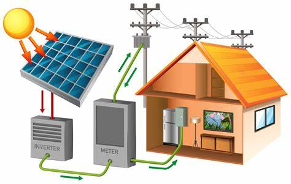
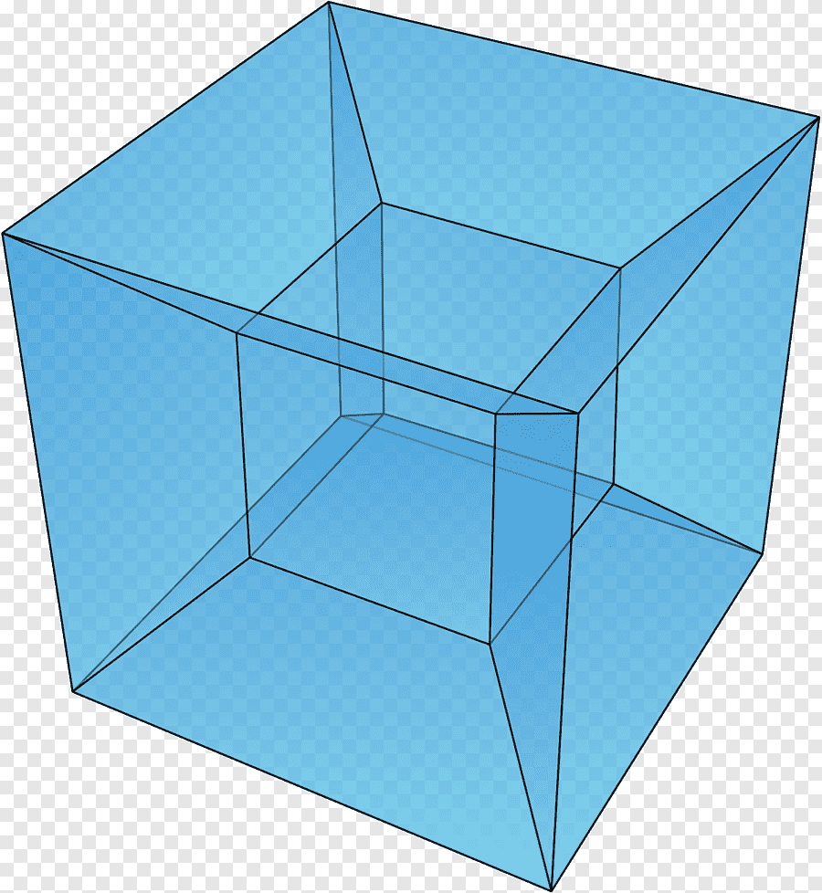
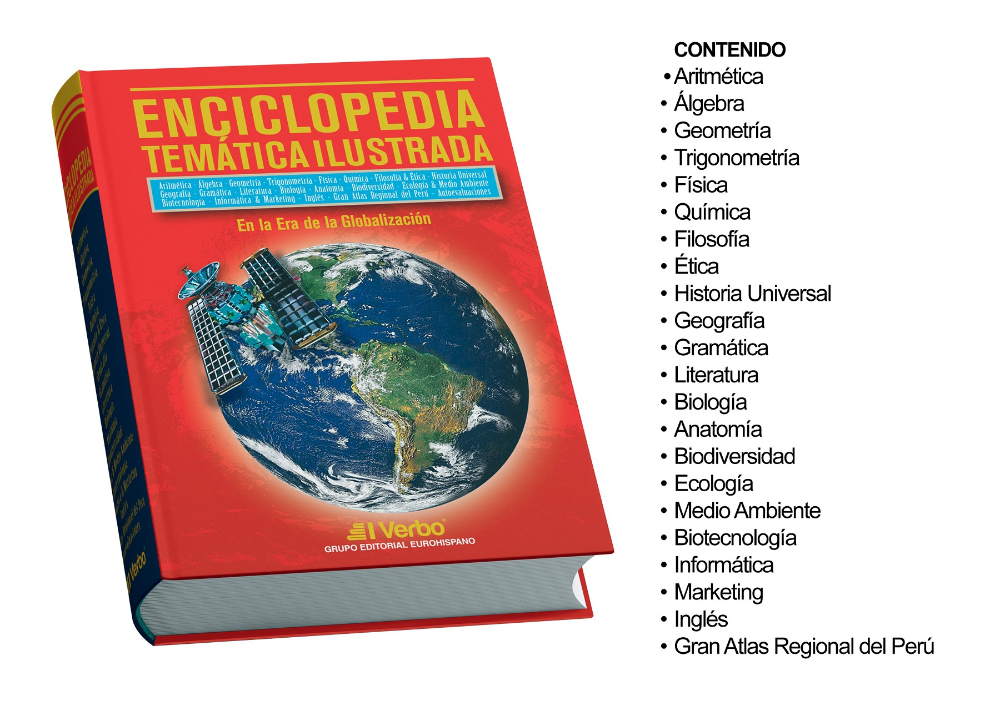

Introducción:
La letra "E" es la segunda vocal y la quinta letra del alfabeto español. Representa un sonido vocálico medio y abierto, siendo una pieza fundamental en la construcción de palabras y expresiones en este idioma. Su versatilidad y omnipresencia la convierten en un elemento esencial para la comunicación..
En esta página encontraremos las palabras más comunes para la letra E:
| 1. Escuela: Institución dedicada a la enseñanza y formación de estudiantes en diversos niveles académicos. | |
| 2. Energía: Capacidad de un sistema para realizar un trabajo o generar un cambio, manifestándose en diversas formas como eléctrica, térmica o cinética.. |  |
| 3. Espacio: Dimensión tridimensional que contiene todos los objetos y eventos físicos del universo, definido por longitud, anchura y altura. |  |
| 4. Economía: Ciencia que estudia la producción, distribución y consumo de bienes y servicios, así como los procesos que regulan la riqueza de una sociedad. | |
| 5. Enciclopedia: Obra de referencia que recopila conocimiento en diversas áreas del saber humano, organizado en forma de artículos o entradas alfabéticas. |  |